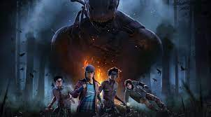

Dead by Daylight
Dead by Daylight é um jogo eletrônico multijogador online assimétrico de sobreivência e horror desenvolvido pela Behaviour Interactive. O jogo é jogado em um modo um contra quatro, onde um jogador assume o papel de um assassino, e os outros quatro jogam como sobreviventes, tendo que escapar do assassino e reparando cinco geradores para abrir os portões de saída e evitarem de serem capturados, enganchados e sacrificados.

Sobre as páginas
Santuário dos Segredos
Onde você encontra quais perks estão disponíveis no santuário essa semana.
Sobreviventes
Escolha um sobrevivente para ver suas estatísticas.
Assassinos
Escolha um assassino para ver suas estatísticas.
Mapas
Escolha um mapa para ver informações e estatísticas relacionadas a ele.